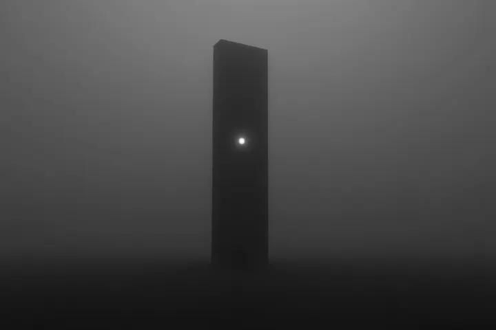

Can't reach the server
Aatmiq didn't answer.
Try againCheck your network or VPN. To use another server: File → Switch Server.

Aatmiq didn't answer.
Try againCheck your network or VPN. To use another server: File → Switch Server.